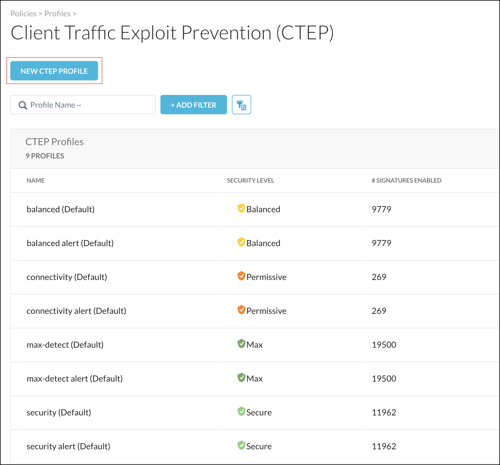
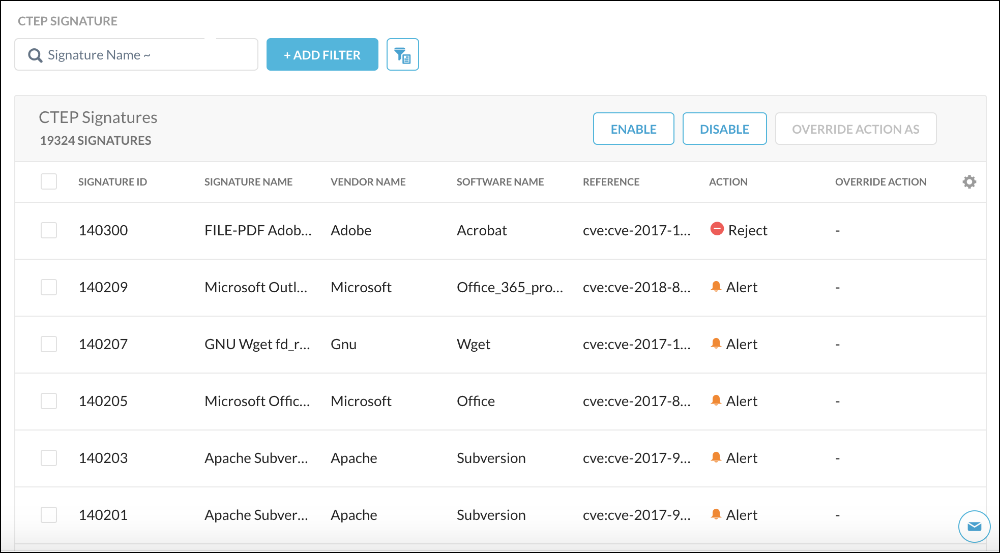
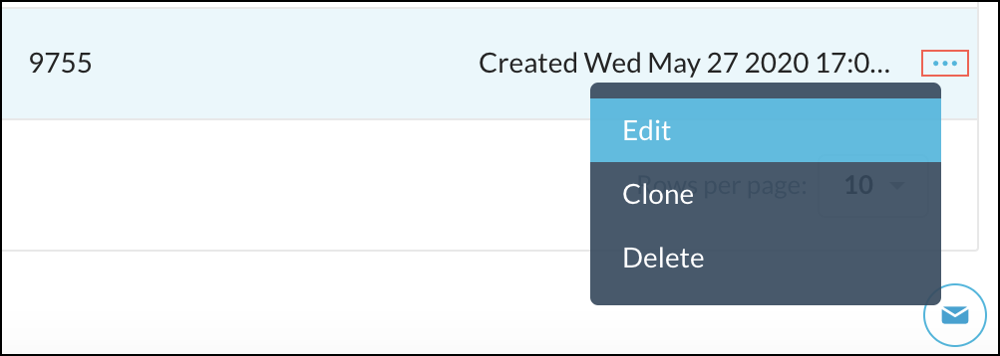

Create a CTEP Profile
The CTEP profile is used in a Real-time Protection policy to detect threats and take action, like blocking traffic based on the signature match. To create an CTEP profile, go to Policies > Profiles > CTEP.
Tip
There are default CTEP profiles, so creating a new CTEP profile isn't required to use this feature. Using the Balanced and Security default profiles are recommended. Creating a new CTEP profile enables you to customize what signatures are used and how.
The CTEP page shows the CTEP profile name, severity level, and number of signatures enabled for the default CTEP profiles. Default profiles cannot be edited. The last edit modification time is shown only for CTEP profiles you create.
Click New CTEP Profile.
 Enter a name for this CTEP profile, and then select a Security level. To send alerts instead of rejecting the traffic, enable the Alert Only Mode toggle.

The bottom of the page shows information about the signatures used in the profile, like signature ID, signature name, vendor name, software name, reference, action, and override action. There are also filter options to search for signatures, buttons to perform actions, and settings for customizing the columns shown in the signatures table. For more details, refer to Using the Signatures Table.
 When finished, click Save.
Click Apply Changes. If desired, add a description for audit logs, and click Apply.
Your new CTEP profile appears in a table at the bottom of the page. The  icon for each new profile opens a menu that allows you to edit, clone, and delete the CTEP profiles you create.
icon for each new profile opens a menu that allows you to edit, clone, and delete the CTEP profiles you create.
|  |
Note
CTEP profiles must be enable to use them in a Real-time Protection policy. To enable an CTEP profile, go to Enable CTEP Settings.
Using the Signatures Table
The Signatures table is shown when CTEP profiles are created and edited. To search for a signature's details used in a profile, enter a name in the Signature Name search field. You can add search filters based on signature criteria, like signature ID, reference, software vendor and name, by clicking +Add Filter.
 |
Search also has a query option. Click the Mode button to search for signatures based on simple terms and Boolean operators.
 |
When you find signatures you want to manage, select the checkbox for those signatures, and then click the Enable or Disable button, or select an option (Reject/Alert) from the Override Action As dropdown list.
 |
The columns shown in the Signatures table can be customized. To modify the columns shown, click the  icon in the table header row, and then select the columns to show on the page.
icon in the table header row, and then select the columns to show on the page.
 |
Whenever you make changes in the Signature table, click Save at the top of the page and Apply Changes.